Cell Segmentation
Cell Segmentation starts with the microscopy data in your Movie folder saved in Deltavision “.dv” file format.
To run cell segmentation, go to ShapeSpaceExplorer > 1-ImageSegmentationFull, open the file “Run_CellSegmentation.m” and click on “Run” which should show the interface below:
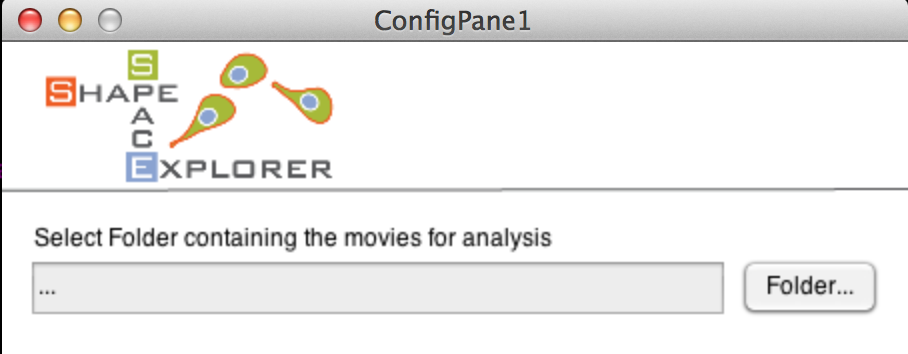
Select your Movie folder containing your microscopy data, which should show all files in a selectable list (see below).
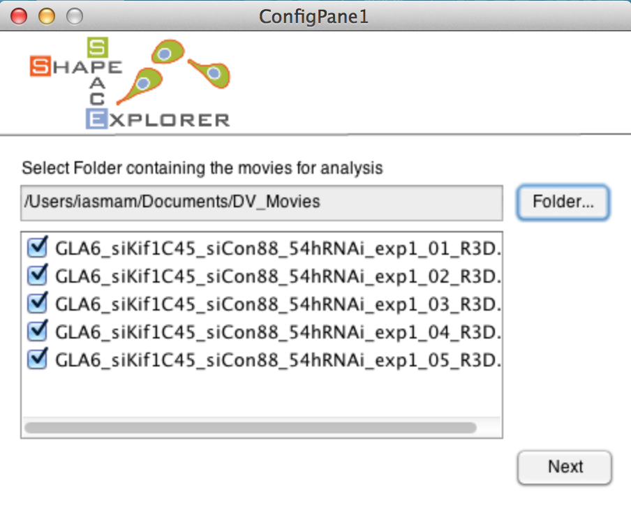
Select all movies that should be analysed. Note that at least one file must be selected to continue which should lead to the next interface (see next page). Note, the loading of the interface is slow, because it calculates the number of frames of your shortest movie from all movies files.
The interface offers two choices: first to analyse all movies from start to end (default choice) and second to select a substack of your frames, which might be helpful if your data went out of focus. Should you select a substack from frame A to frame B, this selection is automatically applied to all movies in your analysis.
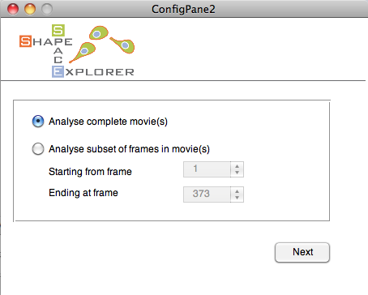
The final interface asks you for the Analysis folder to save the output of the cell segmentation (see below). Clicking on Start Pre-processing starts automatic cell segmentation. This is a time intensive task and can take several hours to a few days depending on your data size. Segmentation parameters ideally be optimised on a typical movie before running a large dataset (see Troubleshooting for more information).
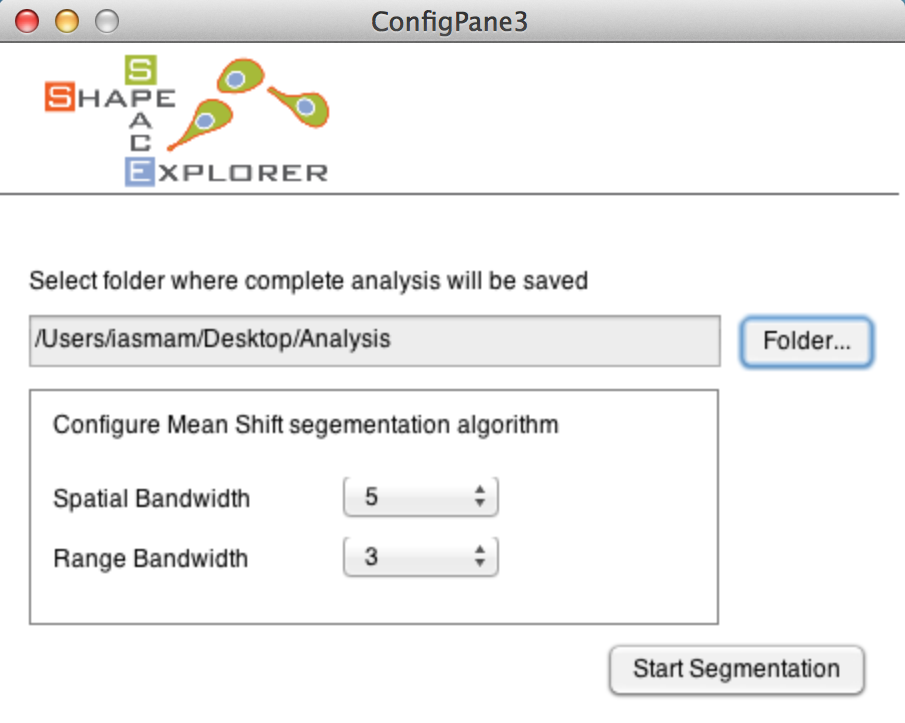
Two progress bars indicate the movie and frame that are currently processed. At the end, the commando line prints a note when the program finishes successfully (see example below).
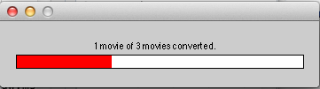
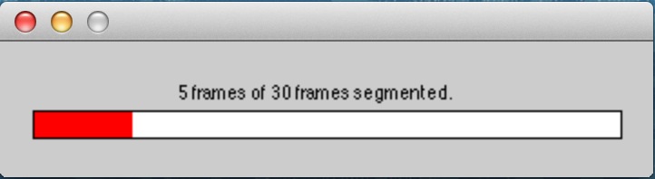
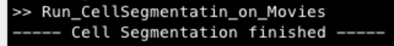
After cell segmentation, the Analysis folder should have the following new files:
- ImageStackXXX.mat for each selected movie
- ImageStackXXXCurveData.mat for each selected movie
- FileMapping.csv: contains the mapping between the new movie names and the original movie names from the Movie folder. Excel can import CSV files.
Troubleshooting
The cell segmentation in ShapeSpaceExplorer uses an implementation of the Mean Shift Algorithm with the EDISON wrapper (Edge Detection and Image SegmentatiON), The reference and details of the algorithm can be found in: D. Comanicu, P. Meer: “Mean shift: A robust approach toward feature space analysis.” IEEE Trans. Pattern Anal. Machine Intell., 24, 603-619, May 2002.
NOTE: Should the segmentation produce strange outputs, then there are two parameters to adjust the algorithm: Spatial Bandwidth and Range Bandwidth. These parameters are ideally optimised on a typical example image before attempting segmentation of a large dataset.
Generally speaking, the range bandwidth influences how much noise the cell segmentation picks up. Should there be too many smalls blobs recognized as cells, this parameter should be increased.
The spatial bandwidth, influences on how large the radius of a detected shape can be as smallest possible radius. Depending on your imaging conditions and average size of your cell, the interface permits to fine tune the cell segmentation step. Though, the proposed default values worked for a white range of cases.
An excellent detailed explanation on how the parameter influence cell segmentation can be found on Wikipedia
Manual Correction of Cell Segmentation
To inspect the cell segmentation results, run the file 1-ImageSegmentationFull > Inspect_Shapes.m in the ShapeSpaceExplorer folder producing the interface below:
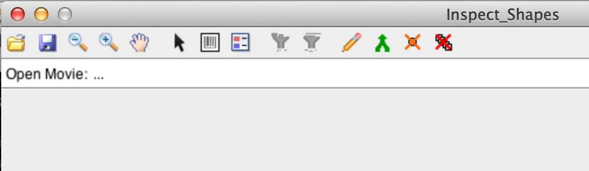
Click on the folder icon in the toolbar and select one of the files with the name format ImageStackXXX.mat, for example ImageStack001.mat. The program highlights the contours of the detected cells. The toolbar offers zoom in, zoom out and pan operations. The 8th icon from the left is the legend icons and permits you to see the id assigned to detected shapes. 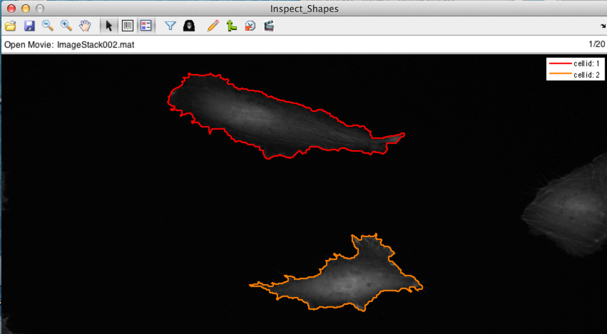
There are a variety of operations that permit to correct the automatic cell segmentation manually. Each of the operations is explained in the following sections.
Delete a Single Shape
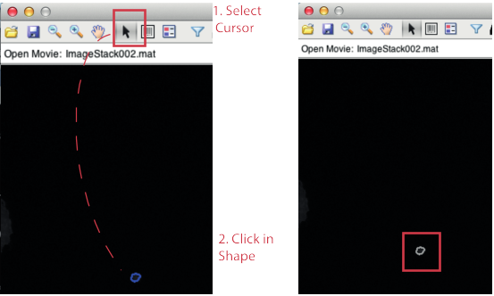
Selecting the Cursor and clicking on a shape removes the shape from the detected cells, indicated by a grey outline. To remove a shape from a frame plus all future frame you need to hold down the key CTRL and click on the shape. To add the shape back to detected shapes, simply click with the Cursor selected inside the shape, which should re-colour the shape in a bright colour.
Filter Out Shapes With Small Area Size
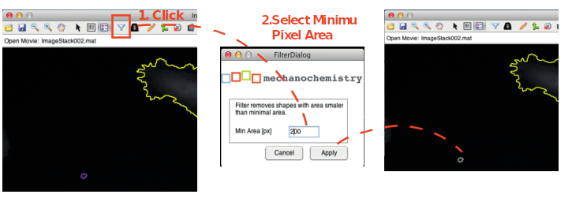
Filter Out Shapes With Small Life Span
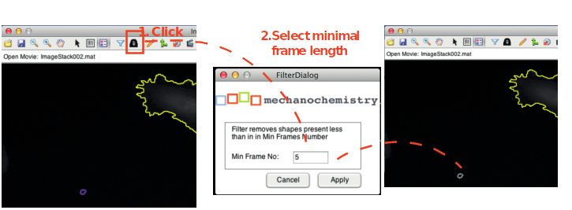
Merge
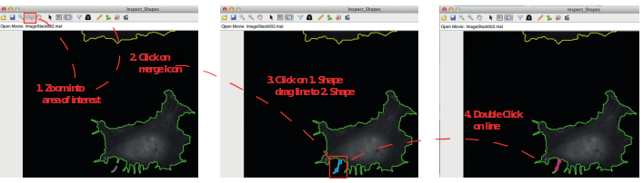
Manual Drawing
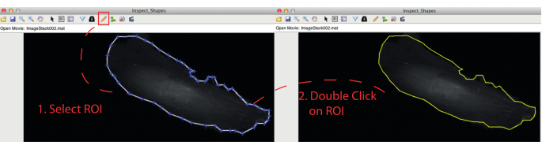
You have the full functionality of the Matlab ROI tool, Full Description here: http://uk.mathworks.com/help/images/ref/roipoly.html
- Delete: Backspace
- Adding a new vertex: Key A
- Delete vertex: right click, and select delete
- Closing Polygon: Move to an existing point and click on it.
Continues Tracks
For the analysis presented in this tutorial, continuous tracks are cell tracks that stretch from a start frame to an end frame, without any interruption. The cell with id one, appearing from frame one to five [1, 2, 3, 4, 5] would be an example. However, if the track would have a missing frame, say at frame three, so that the sequence is [1, 2, 4, 5], then when the program saves your modification, it will assign a new id to the second part of the track.
When you save 3 new files should be produced:
- CellAray001.mat
- CellFrameData001.mat
- ManCorrtdCurves001.mat
After Manual Correction
The tutorial expects you to open each stack in InspectShape.m program and save it from there. For each stack ImageStackXXX.mat, the program creates two files, namely CellArayXXX.mat, and CellFrameDataXXX.mat. The analysis integrates only stacks that have those two files generated. To proceed run 1-ImageSegmentationFull > MakeBigStructs.m 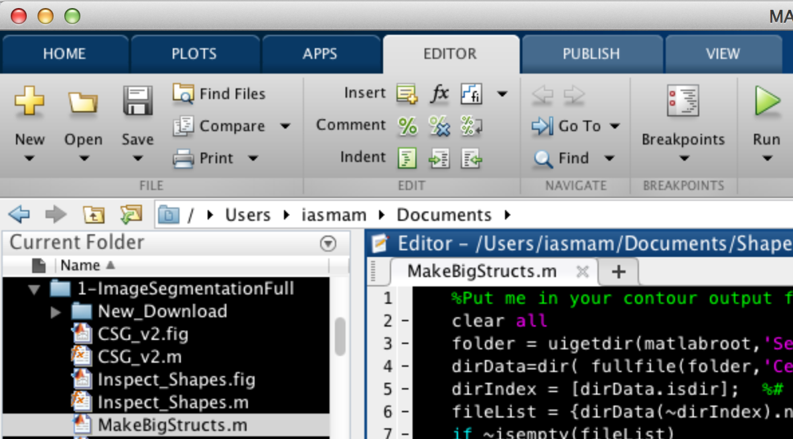
After selecting the Analysis folder, the program generates two files:
- Bigcellarrayandindex.mat
- BigCellDataStruct.mat
Note: you can construct the “Bigcellarrayandindex.m” and “BigCellDataStruct.mat” without manual correction; to do so, run 1-ImageSegmentationFull > MakeBigStructsWithoutManual.m
Note: running the program MakeBigStructsWithoutManual.m will not include any existing manual corrections!
Manual Segmentation
Manually segmented shapes (for example by drawing outlines using the freehand tool in ImageJ and exporting the xy coordinates into individual textfiles) can be imported into the Cell Shape Explorer. Please note that files will be expected to be a tab-separated file with 3 columns. Following the header line these should contain only numbers. Point ID in the first column, x coordinates in the second column and y coordinates in the third column. These should be arranged in a folder structure as this:
.
+-- Stack_001
| +-- Cell_001
| +-- Results_1.txt
| +-- Results_2.txt
| +-- Results_3.txt
| +-- Cell_002
| +-- Results_1.txt
| +-- Results_2.txt
| +-- Results_3.txt
| +-- Cell_003
| +-- Results_1.txt
| +-- Results_2.txt
| +-- Results_3.txt
+-- Stack_002
| +-- Cell_001
| +-- Results_1.txt
| +-- Results_2.txt
| +-- Results_3.txt
| +-- Cell_002
| +-- Results_1.txt
| +-- Results_2.txt
| +-- Results_3.txt
| +-- Cell_003
| +-- Results_1.txt
| +-- Results_2.txt
| +-- Results_3.txt
Use the following Macro in ImageJ
//Macro allows manual extraction of cell shape and saves these as textfiles in the image folder.
macro "Get cell shape [1]" {
run("Clear Results");
getSelectionCoordinates(x, y);
for (i=0; i<x.length-1; i++){
setResult("y", i, y[i]);
setResult("x", i, x[i]);}
updateResults();
dir=getDirectory("image");
roiManager("Add");
nROI = roiManager("count");
selectWindow("Results");
name = dir + "Results_" + nROI + ".txt";
saveAs("Results", name);
setForegroundColor(255, 0, 0);
run("Draw", "slice");
}
Now, run 1-ImageSegmentationFull > ImportManual_Segs_plus_Struct.m, which asks for the data folder as input. If run successful it will generate these two files:
- Bigcellarrayandindex.mat
- BigCellDataStruct.mat